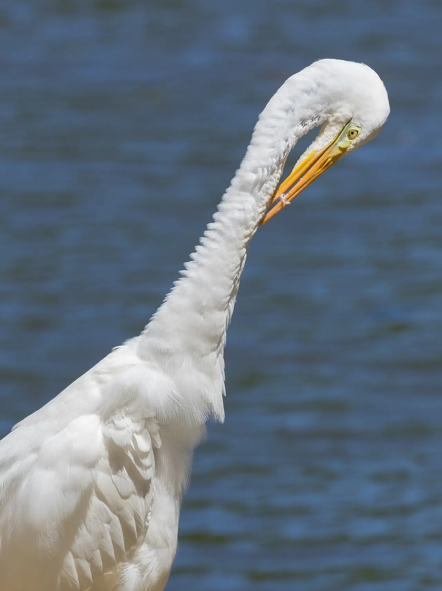
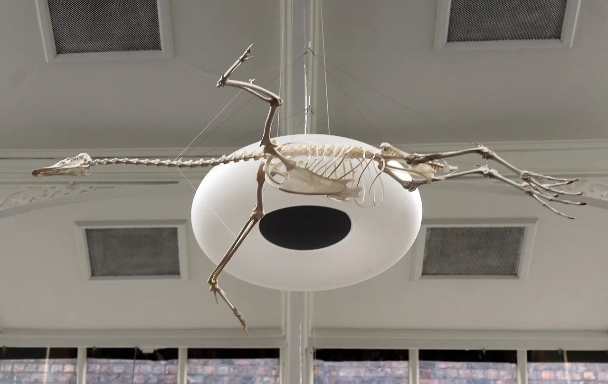

Módulo 1 Aula 3
O esqueleto
Por dentro, uma ave é uma máquina leve. Quase todos os ossos que você tem, ela tem também, só que fundidos, alongados ou ocos.
- Os principais ossos de uma ave e onde ficam
- Por que o esqueleto é leve, mas forte
- Como a asa se compara ao nosso braço

Ave da aula
Garça-branca-grande Ardea alba
Mapa do esqueleto
Este é um esqueleto esquemático de ave, visto de baixo, com as asas abertas e a cabeça para cima. Assim as asas ficam separadas do corpo e dá para ver cada osso. Ele não representa uma espécie específica. Os nomes seguem as fontes [1, 2]. Use os botões para destacar uma região e toque nos pontos para ver os nomes.
Escolha uma região e toque nos pontos do desenho.
Nenhuma região destacada.
Escolha um ponto
O nome e a função do osso aparecem aqui.
Desenho esquemático feito para o curso. A forma e o tamanho dos ossos variam muito entre as espécies.
Seu braço, a asa dela
A asa não é um órgão novo: é o mesmo membro da frente que você usa para segurar um copo. Repare como cada parte tem correspondente.
- ÚmeroO osso do braço. Na ave, é curto e forte, e liga a asa ao ombro.
- Rádio e ulnaOs dois ossos do antebraço. Na asa, a ulna carrega as penas secundárias.
- CarpometacarpoA “mão”: vários ossos fundidos em um só. Carrega as penas primárias.
Ossos ocos, e mesmo assim fortes
Em muitas aves, alguns ossos são : têm espaços internos cheios de ar. Por dentro, finas travas de osso, como vigas, dão resistência[1, 2]. É o mesmo princípio de um tubo de alumínio: pouco material, forma bem pensada.
Corte esquemático, sem escala. Nem todos os ossos são ocos: aves que mergulham costumam ter ossos mais densos.
Pescoço e coluna
A garça mostra bem a divisão[2]: o pescoço tem muitas vértebras e vira em curvas, mas o tronco é firme. Na região do , as vértebras se fundem e formam uma base rígida para as pernas e as asas. No fim da coluna, o segura as penas da cauda.
A é uma crista no osso do peito. Ela aumenta a área onde se prendem os músculos mais fortes do corpo, os que batem as asas. E a funciona como uma trava elástica entre os ombros[1, 3].

Palavras novas
Teste rápido
Sem nota. Se errar, tente de novo.
Por que o esqueleto de uma ave é leve, apesar de resistente?
Para que serve a quilha, no peito da ave?
Qual parte da asa corresponde à nossa mão?
Referências e leitura complementar
Onde conferir o que foi dito nesta aula. Os números entre colchetes no texto levam a estas fontes. Os links abrem em outra aba.
- Morphology of the AvesUCMP · Universidade da Califórnia, Berkeley · inglêsBico sem dentes, ossos ocos ligados aos sacos aéreos, quilha do esterno e fúrcula.
- Bird – SkeletonEncyclopaedia Britannica · inglêsO esqueleto da ave: fusão de ossos, pneumatização, quilha, fúrcula e número de vértebras do pescoço.
- Functional Morphometric Analysis of the Furcula in Mesozoic BirdsPubMed Central (artigo científico) · inglês · leitura complementarEstudo científico sobre a função da fúrcula no voo. Leitura mais técnica.
- All About Bird AnatomyBird Academy · Cornell Lab of Ornithology · inglêsPartes do corpo da ave e o vocabulário usado por quem as observa.
Os endereços foram abertos e conferidos em 29/09/2026. Alguns sites de revistas científicas e de órgãos oficiais exigem verificação humana e não puderam ser testados por robô. Sites externos podem mudar ou sair do ar.
Para levar
Em três frases
- O esqueleto da ave tem os mesmos grupos de ossos que o nosso, mas fundidos, alongados ou ocos para poupar peso.
- A quilha, no peito, e a fúrcula, nos ombros, sustentam os músculos e os ombros no voo.
- A asa é o braço da ave: o úmero, o rádio e a ulna são reconhecíveis, e a mão fica reduzida a poucos ossos fundidos.